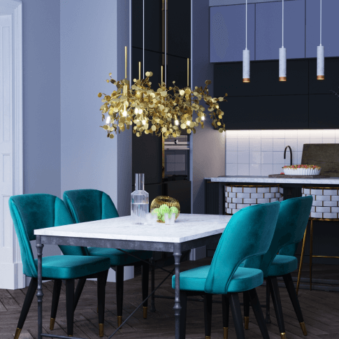

Зонирование в интерьере
Тема- важная и актуальная для всех интерьеров - вне зависимости от площади и назначения. Зонирование необходимо не только для того, чтобы разделить помещение, но так же и для объединения пространс- тва разных комнат в единое целое. Ведь если правильно использовать приемы зонирования можно сделать переход из помещения в помещение очень плавным и ненавязчивым, а это важно для гармоничного восприятия пространства в дальнейшем.
